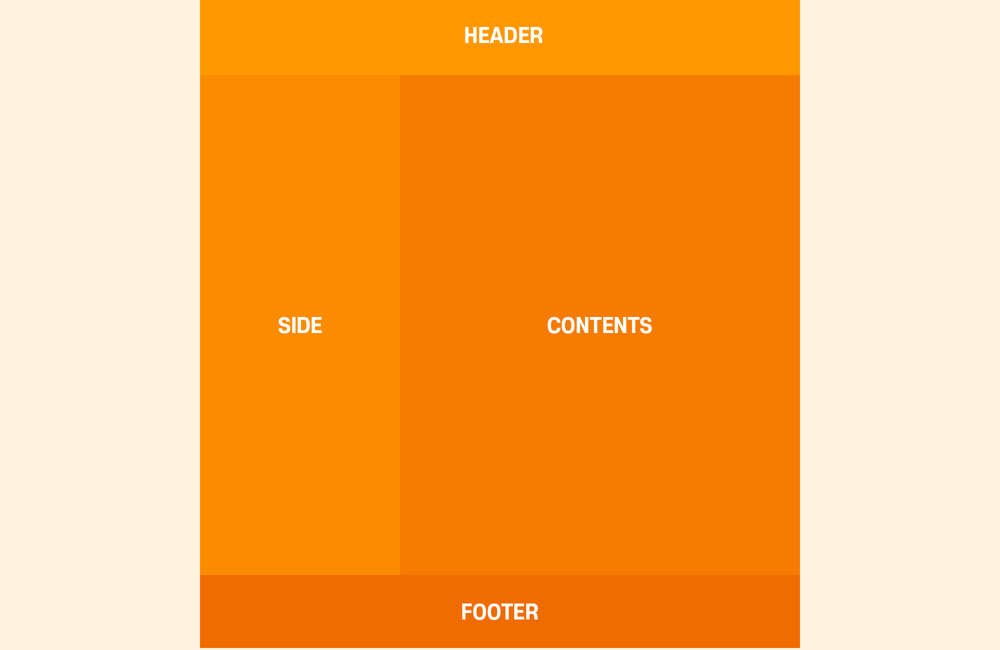
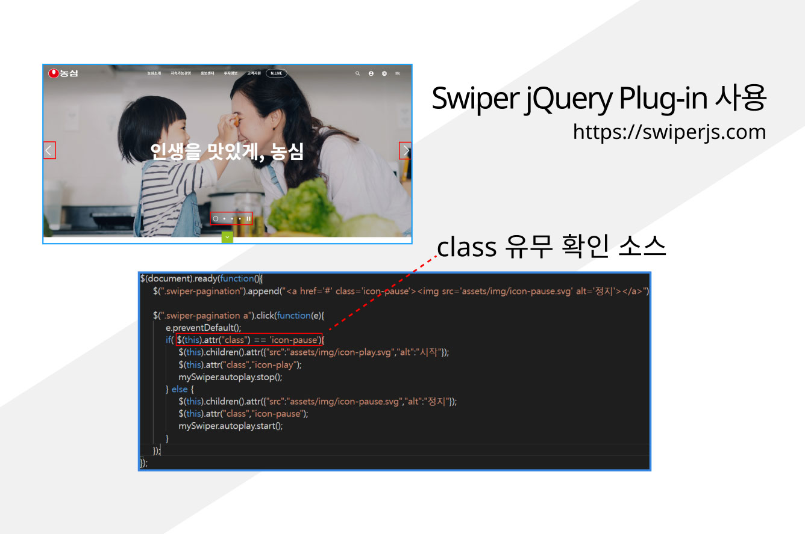

2020.03.11
브라켓 확장기능
- Emmet : 단축키 (예 : ul>li*10 + Tab)
- Custom Work : 상단에 탭 메뉴 기능
- Beautify : 코드 정렬
- Indect Guide : 코딩 라인 가이드
단축키
- 복사하기 : Ctrl + C
- 붙여넣기 : Ctrl + V
- 전체 복사하기 : Ctrl + A
- 4칸 이동하기 : Tab
- 4칸 반대로 이동하기 : Shift + Tab
HTML
- HTML(HyperText Markup Language)은 웹 문서를 표현하기 위한 하이퍼텍스트 마크업 언어.하이퍼텍스트란 문서에서 다른 문서로 이동하는 것을 말하며, 마크업이란 태그를 사용하여 콘텐츠의 의미를 부여하는 것을 말한다. HTML은 프로그래밍 언어는 아니고, 우리가 보는 웹페이지가 어떻게 구조화되어 있는지 브라우저로 하여금 알 수 있도록 하는 마크업 언어이다.
태그(Tag)

- 태그는 HTML에서 정보를 전달하는 방식을 의미한다.
- 열린 태크(Opneing tag) : 이것은 요소의 이름과 열고 닫는 꺽쇠 괄호로 구성됩니다. 요소가 시작부터 효과가 적용되기 시작합니다.
- 닫는 태크(Closing tag) : 이것은 요소의 이름 앞에 슬래시(/)가 있는 것을 제외하면 열린 태크와 같습니다. 이것은요소의 끝에 위치합니다. 닫는 태그를 적어주지 않는 것은 흔한 초심자의 요류이며, 이것은 이상한 결과를 낳게됩니다.
- 내용(Content) : 요소의 내용이며, 이 경우 단순한 단순한 텍스트입니다.
- 요소(Element) : 열린 태그, 닫는 태그, 내용을 통틀어 요소라고 합니다.
속성(Attributes)

- HTML 속성은 태그에 기본 기능 및 유형을 설정하고, 태그의 동작으로 제어하기 위한 용어이다. 요소 이름 다음에 바로 오는 속성은 요소 이름과 속성 사이에 공백이 있어야 되고, 하나 이상의 속성들이 있는 경우엔 속성 사이에 공백이 있어야 한다. 속성 이름 다음엔 등호(=)가 붙으며, 속성 값은 열고 닫는 따옴표로 감싸야 한다.
요소(Element)
- 요소는 HTML을 구성하는 가장 기본 단위. 태그의 시작태그와 끝나는 태그 사이의 범위를 요소라고 한다.
주석
- 주석 표시는 프로그램에 영향을 미치지 않으며, 설명이나 메모를 목적으로 사용한다.
CSS(Cascading Style Sheets
- CSS(Cascading Style Sheets)는 HTML로 작성된 문서를 쓰기 위한 스타일 시트 언어. HTML은 문서의 골격을 이룬다면, CSS는 그 골격에 맞는 디자인 작업 언어라고 생각하면 된다.
CSS 선택자
- CSS 선택자를 통해 요소를 선택하고 속성을 줄 수 있다.
CSS 선택자 종류
- 유형 선택자 : 요소 이름
- 전체 선택자 : 문서에서 모든 요소에 적용. *기호를 사용
- ID 선택자 : 구체적 ID를 지닌 한 요소
- 클래스 선택자 : 많은 요소에 스타일을 한꺼번에 지정하고자 할 때 class로 지정된 요소
클리핑 마스크
- 클리핑 마스크는 상위 레이어의 이미지를 하위 레이어에 클리핑하여 레이어의 모양으로 잘라낸 것처럼 나타내는 기능이다.
- Alt와 함께 사용한다.
이미지 사이트
색상 사이트
폰트 사이트
2020.03.12
레이아웃 구성하기
- 줄 복사 : Ctrl + D (끝에서 사용)
- 명령어 div : 영역 구성
- 명령어 id : 영역의 이름을 설정
- CSS에서 id를 언급할 땐 #을 사용 (예 : div#id)
- 포토샵 단축키 : Ctrl + R (줄 자)
- 포토샵에서 가이드 라인 설정할 경우 Shift와 함께 사용 (정확한 위치를 위함)
- 가이드 라인 보이기/숨기기 : Ctrl + ;
CSS에서*은 명령어의 전체선택,margin은 바깥여백,padding은 안쪽여백,weidth는 가로,height는 세로,text-align은 정렬,font-size는 글자 크기를 뜻한다.
레이어 마스크
- 다수의 레이어 합치기 : Ctrl + E
- Hue/Saturation : Ctrl + U
Chrome 웹 스토어 확장 프로그램
- muzli
- surfit
2020.03.13
레이아웃 구성하기2
Entiti Code
New Code
flaot은 박스영역을 나란히 띄우는 코드clear는 float을 차단하는 코드line-height는 글씨가 한 줄 일때만 정렬이 가능한 코드, 박스의 height 값과 똑같이 써야만 가운데 정렬이 가능text-transform: uppercase;는 대문자를 위한 코드
2020.03.16
목록을 위한 태크(HTML)
<ol></ol>태그는 ordered list의 약자로, 숫자나 알파벳 등 순서가 있는 목록을 만드는 데 사용<ul></ul>태그는 unordered list의 약자로, 순서가 필요 없는 목록을 만드는 데 사용
Emmet 관련 사이트
id 속성과 class 속성의 언급 차이
- CSS로 id 속성의 속성값을 언급할 경우에는 #, class 속성의 속성값을 언급할 경우에는 .(마침표)를 사용
포토샵 Grayscale과 Desaturate 차이
- Grayscale은 단지 레이어를 흑백으로 바꿔준다기보다는 작업창 자체에 흑백 필터를 씌운다는 느낌이라 컬러모드 자체가 흑백모드로 바뀌기 때문에 Grayscale 적용 후에 컬러 작업을 해도 모두 흑백으로 적용된다. 따라서 레이어를 복사 한 후에 적용을 하면 원본도 흑백으로 변하지만 Desaturate는 채도를낮춰서 흑백으로 전화하는 개념이라 레이어를 복사하고 적용해도 원본은 바뀌지 않는다.
2020.03.17
Chrome 웹 스토어 확장 프로그램
- Full Page Screen Capture
- Web Developer
레이아웃 관련 사이트
Photoshop 단축키
- Opacity (투명도) : 숫자 키
Coding 간결
- #wrap {}은 자동으로 width, height값을 적용시켜주므로 쓰지 않아도 된다. 그렇지만 다른 속성을 사용한다면 그 속성들은 써야 한다. 또한, width를 100%로 할 경우도 안써도 상관없다. 기본값이 100%이기 때문이다.
색상 표현 방법
- background-color: #607d8b; = background-color: rgb(96, 125, 139);
- background-color: rgba(0, 0, 0, 0.2); 에서 a는 Alpha로 투명도를 말함
2020.03.18
table 만들기
<tr></tr>태그는 열(가로)를 나타냄<td></td>태그는 행(세로)를 나타냄<td rowspan="2"></td>요소에서rowspan속성은 아래쪽으로 셀을 합치는 속성이고, 속성값 "2"는 태그를 포함하여 2줄을 합치라는 뜻
2020.03.19
비트맵 방식과 벡터 방식
- 비트맵 방식(PhotoShop에서 사용) : 점과 점을 연결함으로써 수학적 함수관계에 의해 이미지를 표현하여 선과 면을 만들어냄
- 장점 : 많은 픽셀로 정교하고 다양한 색상을 가진 이미지를 만들 수 있음
- 단점 : 이미지를 확대하고 축소할 수는 있으나, 깨짐 현상과 이미지 품질이 저하됨
- 벡터 방식(Illustrator에서 사용) : 비트맵은 비트의 지도(map of bits)라는 뜻으로, 각 픽셀에 저장된 비트 정보가 집합된 것
- 장점 : 자유롭게 확대하거나 축소해도 해상도에 영향받지 않으며, 용량이 많이 늘어나지 않음
- 단점 : 사진이나 이미징처럼 정교한 그래픽 표현에는 한계가 있음
일러스트 배우기
- Ctrl + J : 점과 점을 이어주는 역할(일러스트는 반드시 면으로 이루어져야 한다)
- Ctrl + D : 줄 복사
- Ctrl + Shift + F9 : Pathfinder
2020.03.20
CSS 사용법
- .header .header-menu a는 HTML에서 class=header의 자식인 class=header-menu 안에 있는 손자 a를 의미
- 상대주소 사용할 때 ../는 상위로, /는 하위를 뜻함
- background에 이미지를 사용할 때는 background-repeat을 사용하지 않아도 기본값으로 이미지가 반복이 된다. 따라서 반복을 조절하기 위해 background-repeat을 사용해야 함
- background-position: center top;은 x축 y축을 의미
- #header {background-image: url(../img/header_bg.jpg);
background-repeat: repeat-x; background-position: center top;}에서 background 관련 속성이 너무 많아 길어지게 된다. 보다 쉽게 코딩 하기 위해서 속기형표기법이 있다.
background: {url(../img/header_bg.jpg) repeat-x center top;}처럼 사용한다.
3가지 속성을 하나로 사용한거라 세미콜론은 마지막에 한번만 사용한다. - font-family: 'Nanum Gothic', AppleSDGothicNeo-Regular,'Malgun Gothic','맑은 고딕', dotum,'돋움',sans-serif; 에서 한글 글씨체에는 작은 따옴표를 사용해야 한다.
- .header .header-menu a {color: #fff; padding: 10px 0px 10px 13px;}에서 a 태그는 인라인 요소라서 왼쪽, 오른쪽 여백은 가능하지만 위, 아래 여백은 불가능하다. 그래서 블록 요소로 바꿔줘야만 한다. display: block; 라는 속성과 값을 추가하여 인라인 요소를 블록 요소로 바꾸면 된다. 그렇지만 블록 요소는 한 줄에 하나의 영역만 위치한다. 그래서 display: block;를 추가하면 블록 요소가 되었기 때문에 글자가 세로로 나열이 된다. 이것을 해결하기 위해 인라인 요소와 블록 요소의 특성을 동시에 가지고 있어야 한다. 따라서 최종적으로는 display: inline-block;을 추가해야 한다.
2020.03.23
웹 표준 사이트
<span> 태그
-
<span>태그는 HTML 문서에서 인라인 요소들을 하나로 묶을 때 사용 -
<span>요소는 그 자체만으로는 어떠한 의미도 가지지 않지만, class나 id와 같은 전역 속성과 함께 사용하여 스타일링을 위해 요소들을 그룹화하거나 lang속성과 같은 속성값을 공유하는 데 유용하게 사용 -
<span>요소는 <div>요소와 매우 비슷하게 사용되지만, <div>요소는 블록 요소인데 반해 <span>요소는 인라인 요소
:last-child (가상 클래스)
- 기존에 있던 선택자(타입 선택자, id 선택자, class 선택자, 전체 선택자 등)로는 구체적인 스타일을 줄 수가 없으므로 가상 클래스로 어떤 요소의 n번째 줄만 선택해서 스타일을 줄 수가 있음
:first-child부모 요소 안에 있는 첫번째 자식만을 선택할 수 있는 선택자:last-child부모 요소 안에 있는 마지막 자식만을 선택하는 선택자:nth-child()부모 요소 안에 n번째만을 선택하는 선택자(IE9부터 적용)
ul>li*7>a[href="#"] 와 ul>li*7>a[#]은 같다
<a>태그에href="#"가 입력된 상태로 써짐
list-style: none;
<ul>,<ol>,<menu>와 같은 블릿기호를 없앰
text-indent: -9999px;
text-indent는 들여쓰기를 하는 속성. 이것을 이용하여text-indent: -9999px;를 한다면 alt가 없는 background-image나 이미지 스프라이트에 alt를 주는 효과를 줄 수가 있다.
2020.03.24
.column.col$*2 (Tab)
-
<div class="column col1"></div>
<div class="column col2"></div> - $는 순차적인 번호가 설정 된다.
- $$일 경우에는 01부터 시작
.column.col$*2>h3+p (TAB)
-
<div class="column col1">
<h3></h3>
<p></p>
</div>
<div class="column col2">
<h3></h3>
<p></p>
</div>
2020.03.25
<img src="img/notice01.jpg" alt>
- img 태그는 의미가 있을 경우에 사용. 그렇지만 의미가 없는 사진을 사용할 경우에는 alt만 남겨두면 된다. 그러면 시각 리더기가 읽지 않는다.

2020.03.30
<input>태그의 주의점
- 시각 리더기에서 읽지 못할 수 있기 때문에 <input>태그는 <label>태그와 항상 같이 사용하여 웹 접근성을 지켜야 한다.
- 속성값 checkbox는 텍스트와 같이 있을 경우 정렬이 맞지 않는다. 그래서 위치조절을 해야 하는데 checkbox는 이동이 되지 않는다. 따라서 텍스트에 변화를 줘서 위치를 조절해야 한다.
2020.03.31
Visual Studio Code 단축키
- 줄 복사 : Alt + Shift + 방향키
- 줄 이동 : Alt + 방향키
- 다중 커서 : Alt + 좌클릭
- 같은 단어 선택 : Ctrl + D (선택할 만큼 누르기)
반응형 사이트
반응형을 만들때는 창이 작아 질수록 가로 스크롤이 생기면 안된다. 그래서 미디어 쿼리를 사용하는 것이다.
가로 스크롤이 생기지 않게 하기 위해서는 px값을 %값으로 변형해야 한다.

2020.04.02
.shadow33 {box-shadow: 0px 0px 5px 1px rgba(0,0,0,0.8) inset;}각 속성값 의미
- 0px : x축
- 0px : y축
- 5px : blur 효과
- 1px : 스프레이드(그림자 길이)
- inset : 그림자 내부 적용
div {transition: color 0.3s;}속성 의미
- 컬러의 변화를 0.3초 동안 점진적으로 변하게 하는 것
2020.04.06
사이트
2020.04.07
border-radius 적용 방향
{border-radius: 0 10px 20px 30px;}- 0 : 왼쪽 위
- 10px : 오른쪽 위
- 20px : 오른쪽 아래
- 30px : 왼쪽 아래
{border-radius: 0 10px 20px 30px / 30px 20px 10px 0;}- /를 기준으로 왼쪽 부분
- 0 : 왼쪽 위 x축
- 10px : 오른쪽 위 x축
- 20px : 오른쪽 아래 x축
- 30px : 왼쪽 아래 x축
- /를 기준으로 오른쪽 부분
- 30px : 왼쪽 위 y축
- 20px : 오른쪽 위 y축
- 10px : 오른쪽 아래 y축
- 0 : 왼쪽 아래 y축
2020.04.08
두 줄 표현
div {overflow: hidden; text-overflow: ellipsis;
display: -webkit-box;
-webkit-box-orient: vertical;
-webkit-line-clamp: 2;}
max-height: 40px /* 구 버전일 경우 필요 */2020.04.09
<img src="assets/img/blog3_@1.jpg" srcset="assets/img/blog3_@2.jpg 2x, assets/img/blog3_@3.jpg 3x" alt="블로그이미지">- srcset 속성은 각 기기의 해상도에 따른 이미지를 띄우는 속성이며, 2x로 인해 해상도가 2배가 되면 blog3_@2 이미지가 자동으로 보이게 된다. 이미지 주소와 해상도 사이에는 띄어쓰기를 해야 하며, 이미지 주소를 추가 할 경우에는 콤마(,)가 필요하다.
2020.04.13
/* 기존의 float 방법 */
.lightbox {overflow: hidden; }
.lightbox a {float: left; width: 19%; margin: 0.5%; }
/* display: flext */
.lightbox {display:flex; flex-wrap: wrap; justify-content: space-between;}
.lightbox a {width: 19%; margin-bottom: 1%;}
/* display: grid */
.lightbox {
display: grid;
/* grid-template-columns: 1fr 1fr 1fr 1fr 1fr; */
grid-template-columns: repeat(5, 1fr);
grid-gap: 8px;
}
2020.04.14
text-align속성을 쓴 상태에서float속성을 사용하면float이 깨져버리므로 함께 사용하지 않는다.translateZ속성은perspective(원근점)속성과 같이 써야 원근감을 줄 수 있다.
2020.04.16
/* 컨텐츠 가운데 정렬 방법 */
div {position: relative;}
div .first {
position: absolute;
left: 0; top: 0; right: 0; bottom: 0;
margin: auto;
}
div {position: relative;}
div .first {
position: absolute;
left: 50%; top: 50%;
transform: translate(-50%, -50%);
}
2020.04.27
함수VIEW
2020.04.28
display: flex; 예제 바로가기
부모 요소에 사용하는 속성
| 속성 | 의미 |
|---|---|
| display | Flex Container를 정의 |
| flex-flow | flex-direction와 flex-wrap의 단축 속성 |
| flex-direction | Flex Items의 주 축(main-axis)을 설정 |
| flex-wrap | Flex Items의 여러 줄 묶음(줄 바꿈) 설정 |
| justify-content | 주 축(main-axis)의 정렬 방법을 설정 |
| align-content | 교차 축(cross-axis)의 정렬 방법을 설정(2줄 이상) |
| align-items | 교차 축(cross-axis)에서 Items의 정렬 방법을 설정(1줄) |
자식 요소에 사용하는 속성
| 속성 | 의미 |
|---|---|
| order | Flex Item의 순서를 설정 |
| flex | flex-grow, flex-shrink, flex-basis의 단축 속성 |
| flex-grow | Flex Item의 증가 너비 비율을 설정 |
| flex-shrink | Flex Item의 감소 너비 비율을 설정 |
| flex-basis | Flex Item의 (공간 배분 전) 기본 너비 설정 |
| align-self | 교차 축(cross-axis)에서 Item의 정렬 방법을 설정 |
2020.04.29
jQuery Reference 바로가기
2020.05.06
농심 사이트 바로가기
2020.05.08
jQuery 함수 설명
- click() : 클릭하면 이벤트가 발생한다.
- hide() : 요소를 숨겨준다. (CSS의 display: none;과 같다)
- show() : 요소를 보여준다. (CSS의 display: block;과 같음)
- eq() : 요소의 순서를 뜻한다.
- index() : 요소의 순서를 지정한다.
- addClass() : 선택한 요소에 클래스를 추가한다.
- removeClass() : 선택한 요소에서 클래스를 제거한다.
2020.05.11
jQuery 함수 설명
- toggleClass() : addClass와 removeClass를 합친 함수이다.
- slideToggle() : slideUp과 slideDown을 합친 함수이다.
2020.05.12
jQuery 함수 설명
- text() : 요소에 텍스트를 추가할 수 있다.
- offset() : 요소의 좌표를 가져오거나 특정 좌표로 이동한다.
- parseInt() : 문자열을 상수로 바꿔주며 소수 부분은 버린다.
- animate({}) : 움직이는 효과를 줄 수 있다. 중괄호를 꼭 써야한다.
- scrollTop() : 요소의 스크롤바 수직 위치를 반환하거나 스크롤바 수직 위치를 정한다.
2020.05.13
jQuery 함수 설명
addClass(), removeClass(), toggleClass를 사용하기 위해서는 CSS로 클래스를 만들어줘야 하는 불편함이 있다. 이를 위해 animate({})를 이용하면 되지만, 한 번만 동작이 되고 이전으로 돌아가지 않는다. 따라서 toggleClass()를 if문에 대입하여 사용하면 이러한 불편함을 해결할 수가 있다.